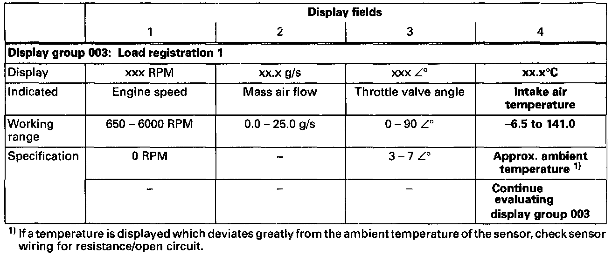
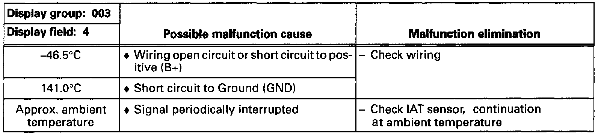
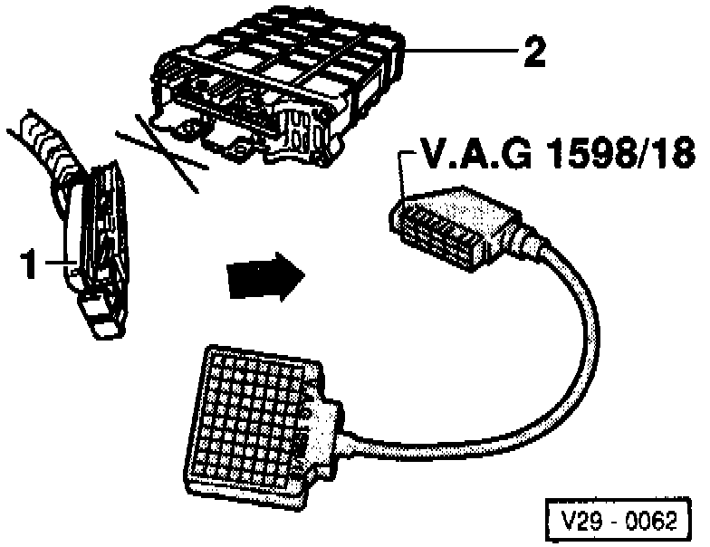
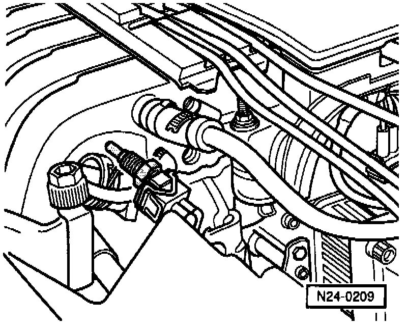

Air Temperature Sensor ( Ambient / Intake ): Testing and Inspection
Special tools, testers and auxiliary items:- VAG 1551/1552 scan tool with VAG 1551/3 adapter cable.
- VAG 1598/18 test box.
- Multimeter (Fluke 83 or equivalent).
- Connector test kit VW 1594.
- Wiring diagram.
- Freeze spray (commercially available).
Test sequence:
- Connect VAG 1551/1552 scan tool and select "Engine Electronics" address word 01. Testing and Inspection When doing this ignition must be switched on.
Indicated on display
- Press buttons -0- and -8- to select "Read Measuring Value Block"function 06 and press -Q- button to confirm input.
Indicated on display
- Press buttons -0-, -0- and -3- to input display group 003 and press -Q- button to confirm input.

Indicated on display (14 = Display fields)
- Check the specification for intake air temperature sensor (display field 4).

Evaluating display group 003

Checking wiring
- Switch ignition off.

- Connect VAG 1598/18 test box to ECM wiring harness (arrow).

- Disconnect 2-pin connector (arrow) at Intake Air Temperature (IAT) sensor -G72-.
- Check wiring between test box and 2-pin connector for open circuit according to wiring diagram.
- Terminal 1 and test box socket 36.
- Terminal 2 and test box socket 33.
Resistance: max. 1.5 ohms.
- Check wire between ECM connector and 2-pin connector terminal 2 for short circuit to wire terminal 1 and to vehicle Ground (GND), according to wiring diagram.
Terminal 2 and test box socket 36.
Specification: infinite ohms.
- Additionally, check both wires for short circuit to battery positive (B+).
Specification: infinite ohms.
If no malfunction in wire is detected:
- Perform resistance measurement on IAT sensor -G72- terminals 1 and 2, resistance values See Fig. 1.

Fig. 1 Resistance graph
The diagram is valid for Engine Coolant Temperature (ECT) sensor -G62- and Intake Air Temperature (IAT) sensor -G72-.
Scale A shows resistance values for temperature range 0°-50°C (32°-122°F) and scale B the values for temperature range 50°-100°C (122°-212°F).
Examples:
- 30°C (86°F) corresponds to a resistance from 1500-2000 ohms.
- 80°C (176°F) corresponds to a resistance from 275-375 ohms.
If the specification is not attained:
- Replace Intake Air Temperature (IAT) sensor -G72-.
Continuation of check when display = ambient temperature

- Remove IAT sensor -G72- (harness remains connected).
- Read intake air temperature value in display field 4.
- Spray sensor with a commercially available freeze spray and at the same time observe temperature value.
- Temperature value must decrease.
If the specification is not attained:
- Replace Intake Air Temperature (IAT) sensor -G72-.
- Read the readiness code. If DTC memory has been erased, verify repair via appropriate display group, Readiness code, creating. Testing and Inspection